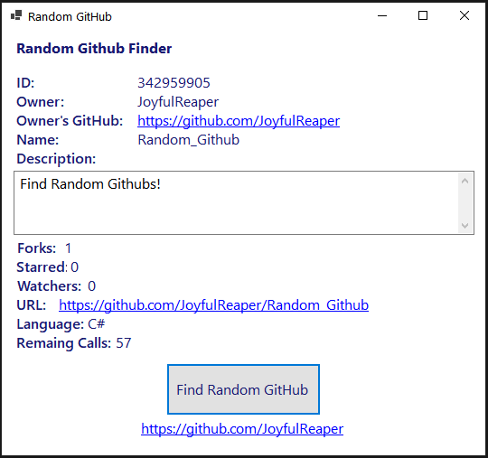

My Projects
Here is a selection of some of the projects I have worked on, with a breif description. I will add more here as time allows. All projects are licensed under MIT with full source code available unless otherwise noted. Please contact me if you would like an executable copy of any project.
DiscordBot (GitHub)
DiscordBot is a Discord bot, primarily with moderation commands and most of the other common commands you would expect from a Discord bot. The full list of commands can be found in the
README file. I originally did not intend for this to become a long term project, but I have had so much fun
working on it that I decided to keep working on it. I will be using this to increase my web programming skills by creating an API for the bot to send logs and moderation stats to, then creating
a website to display this information.
Random GitHub (GitHub)
This application uses the offical GitHub API to find a random GitHub Repository. For now this is a simple single WinForm application, with plans to expand the amount of information shown.

HappyIRC (GitHub)
HappyIRC is a project I attempted, but struggled some with the design. The intention of this project is to implement a fully RFC compliant IRC Client and Server Library in C#, and use these
libraries to create: A Console IRC client, One or more GUI IRC clients (WinForms, WPF, possibly ASP.NET), and finally an IRC server. I plan to revisit this project at a later date, as I beleive currently
a better use of my free time is to learn more front-end web technologies before revisting this project.
Time Tracker (GitHub)
This application allows tracking the amount of time spent on projects. Categories and subcategories can be used to organize projects. Entries can then be added to these project. The total time spent on all projects can then be tracked, along with the amount of time spent per project, category and subcategory. It has the option to use a sqlite or SQL Server database.
Polling API (GitHub)
An API for creating, voting on, and getting the results for polls. I wrote this with the intention of interacting with with a (private source code) Discord bot for a server I am a part of. Missing features: Need a way to retrieve a subset of all polls. If this API could be useful for you please contact me on GitHub for potential available access, as it is running on this website.
File Joiner (Github)
A simple application for joining any type of file.